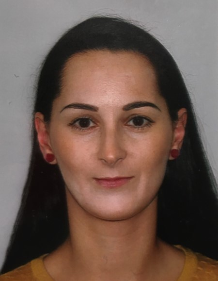

Alenka Kirkham

I am a very dedicated and task-focused individual who is looking for a career change after working as a primary school teacher for over 15 years
Education
-
The Complete 2023 Web Development Bootcamp -
Udemy
- MA degree in English language and literature -
University of Presov (Slovakia)
Work experience
-
Running a Language department in an Academy
September 2012- June 2023
- Leading Department of Moden Foreign Languages
- Organising large events such as Multicultural Week
- Developing new scheme of work and preparing lesson plans during COVID for the academy
-
Managing a small team of learning support assistants in a primary school
September 2012-June 2023
- Running weekly meeting with the team
- Setting team tasks
-
Primary school teacher
September 2012-June 2023
- Teaching primary school children
- Planning lessons and assessing pupils' progress
- Liasing with parents who could not speak English
-
Supply teacher
September 2006-July 2012
- Teaching both primary and secondary students
- Travelling to schools at a very short notice
- Ability to quickly adapt to a new environment and deliver lessons
- Teaching very challenging pupils
-
EFL teacher in summer schools
May-August 2006
- Teaching young people from across the globe English
- Planning engaging lessons to capture pupils' interest
- Working in a summer language school which requires a lot of flexibility
-
Learning support assistant
May 2004-July 2006
- Working and supporting pupils with physical and mental disabilities
Skills
- Organisation ⭐ ⭐ ⭐ ⭐ ⭐
- Planning ⭐ ⭐ ⭐ ⭐
- Task-managing ⭐ ⭐ ⭐
Awards and certifications
Other